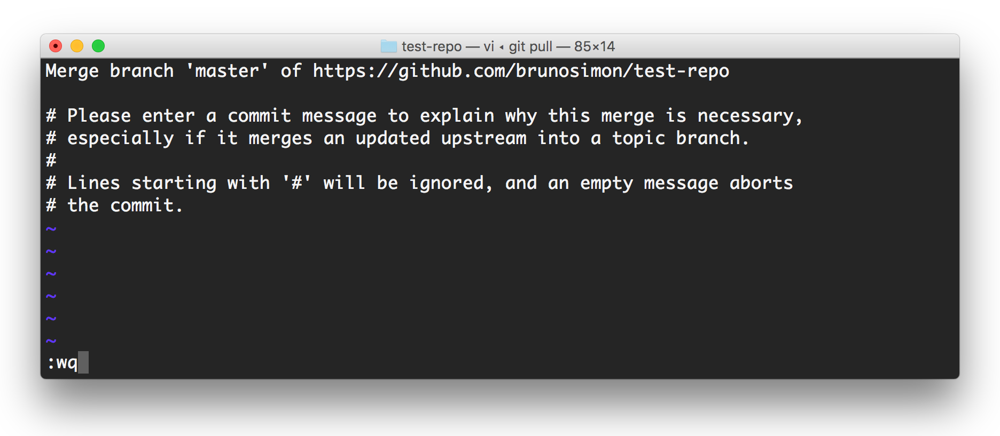

H2 - P2020
Développement web
Cours 13 - 2017-01-09
- github : https://github.com/brunosimon/hetic-p2020
- site : http://bruno-simon.com/hetic/p2020/
- contact : bruno.simon@hetic.net
Git
Sommaire
Qu'est-ce que c'est ?
Git est un outil de versionning
- Créé par Linus Torvalds
- Permet de sauvegarder les différentes versions d'un projet
- Historique
- Idéal pour travailler à plusieurs
- Difficile au début
- Indispensable ensuite
Chaque modification équivaut à une nouvelle version du projet
Une modification est appelée commit
- Quoi ?
Modification (création, modification, suppression) - Par qui ?
Auteur du commit - Quand ?
Date de la modification - Pourquoi ?
Description de la modification
Installation
Git fonctionne depuis le terminal
Pour savoir si git est déjà installé, ouvrez le terminal et tapez git --version
Si la version s'affiche, passez l'étape d'installation
Mac
- Télécharger le fichier à partir de l'adresse suivante
git-scm.com/download/mac - Lancez le .dmg
- Lancez le .pkg
- Suivez l'installation
Windows
- Télécharger le fichier à partir de l'adresse suivante
git-for-windows.github.io - Lancez le .exe
- Suivez l'installation

Un projet git est appelé repository ou juste repo
Afin de travailler à plusieurs, nous allons avoir besoin d'un hébergeur git
Il existe plusieurs solutions
La meilleure pour nous est GitHub
GitHub

GitHub est un hébergeur git
Nous allons pouvoir créer des comptes et créer des repositories
GitHub est bien plus
- Réseau social
- Bug tracker
- Project manager
- Team manager
- Hébergeur de sites
- Support de documentation
- Critère de recrutement
Les repositories peuvent être publics ou privés
Vous serez limités dans le nombre de repo privés sauf si vous payez (6.64€/mois)
Sauf si vous êtes étudiants !
github.com/pricing
Alternatives
Allez sur github.com et créez-vous un compte
- Récupérez votre pseudo GitHub et l'email que vous avez utilisé
- Ouvrez le terminal n'importe où
- Tapez git config --global user.name "votrepseudo"
- Tapez git config --global user.email "votre@email"
Créer et récupérer un repository
Créer un repo sur GitHub
- Allez sur votre profile
- Allez dans l'onglet Repositories
- Cliquez sur New
-
Choisissez un nom de repo
(minuscules, majuscules, tirets, underscore, chiffres)
(ex: test-repo) - Cliquez sur Create repository
Récupérer en local
- Ouvrez le terminal
-
Allez dans le dossier contenant vos projets
(cd, pwd, ls) -
Tapez git clone https://url-de-votre-repo
l'URL de votre repo est disponible sur la page du repo
(ex: https://github.com/brunosimon/test-repo.git) -
Allez dans le dossier nouvellement créé
(ex: cd test-repo)
Le dossier nouvellement créé contient un dossier .git (invisible sur mac)
Sur mac, dans le terminal, tapez defaults write com.apple.finder AppleShowAllFiles TRUE;killall Finder pour faire apparaître les fichiers/dossiers cachés
Ce dossier contient tout l'historique, toutes les versions, de votre projet (actuellement pas grand chose)
Ne touchez jamais au contenu de ce dossier
Faire un commit
Maintenant que nous avons le repo en local, nous voulons commencer à travailler dessus
Faire une modification
- Créez un fichier index.html
- Rajoutez n'importe quoi dedans
Indiquer quels fichiers sont modifiés
Lorsque nous avons créé le fichier index.html, celui-ci était untracked. Il ne fait pas encore parti du repo.
La commande git add index.html permet d'indiquer que le fichier est maintenant staged
L'état staging correspond simplement une préparation de commit
Astuce
La commande git status permet de lister le(s) fichier(s) modifié(s)
La commande git diff index.html permet de lister les modifications dans le(s) fichier(s)
- git add index.html stage uniquement un fichier
- git add mon-dossier/ stage un dossier entier et tout son contenu
- git add --all stage tous les fichiers modifiés
Faire un commit
La commande git commit ... permet de créer le commit
Tous les fichiers stagés vont faire parti de ce commit
- Quoi ?
Fichiers stagés - Par qui ?
Git config - Quand ?
Date actuelle - Pourquoi ?
???
Il faut donc rajouter une description à notre commit pour expliquer ce qu'il apporte
Tapez git commit -m "Create index file"
-m permet de renseigner directement le message associé au commit
Envoyer sur GitHub
Notre commit est prêt, mais en local
Avant d'envoyer au serveur, il est nécessaire de récupérer d'éventuelles modifications faites par d'autres développeurs entre-temps
La commande git pull permet de faire cela
Astuce
Faites un git pull avant de commencer à travailler pour vous assurer d'avoir la dernière version du projet
Désormais, nous pouvons envoyer serainement notre commit sur le serveur
Tapez git push
À cette étape, le terminal devrait vous demander de rentrer votre pseudo et mot de passe GitHub
Ces accès ne vous seront pas demandés par la suite
Rendez-vous sur le repo pour découvrir votre commit avec le fichier index.html

Résoudre un conflit
Avant de faire le git push, nous faisons un git pull afin de récupérer la dernière version du projet
Notre modification est censée s'appliquer par dessus la dernière version
Mais que ce passe t'il si un autre développeur à fait une modification entre-temps
Conflit sur différents fichiers
Si un autre fichier a été modifié entre-temps et qu'il n'y a pas de conflit, l'éditeur vi va apparaître avec un contenu pré rempli
Tapez simple :wq et faites ENTRER
- : permet d'écrire une commande VI
- w indique de sauvegarder
- q indique de quitter

Un second commit vient d'être créé
C'est un commit de merge entre votre commit et les différents commits qui ont eu lieu entre-temps
Vous pouvez envoyer serainement avec git push
Conflit sur même fichiers
Si un développeur a modifié le même fichier que vous, il va falloir choisir quelle modification conserver
Git ne peut décider à votre place quel commit choisir. Vous allez devoir le résoudre vous même
Dans l'exemple qui suit, nous avons décidé de rajouter une liste de nombres, mais un autre développeur a décidé de rajouter une liste de lettres
Lorsque nous avons fait le git pull, git a modifié le code afin de faire apparaître les deux commits
La partie <<<<<<< HEAD correspond à notre code
L'autre partie correspond à l'autre code
- Corrigez le conflit manuellement
- Testez que le projet fonctionne
- Stagez le(s) fichier(s) concerné(s) avec git add index.html
- Créez un commit en tapant simplement git commit
- Sauvegardez et quittez l'éditeur VI avec :wq
- Envoyer avec git push
La résolution de conflits et la partie la plus difficile à maîtriser
Il faut faire preuve de rigueur et d'organisation au sein de la team
Vous avez compris l'essentiel du workflow git
Astuces / Bonus
README
Un readme est un fichier descriptif accompagnant un projet
On peut le retrouver dans des sous-dossier, mais il est en général à la racine
Son contenu apparaît directement sur le repo
Soignez vos readme
Plusieurs noms possibles
- readme.md
- README.md
- README
- ...
Informations qu'on peut retrouver dans un readme
- Description
- Exemples d'utilisation
- Installation
- Auteurs
- Contributeurs
- Remerciements
- License
- ...
Le readme peut être écrit en markdown
Markdown est un language de formatage
Nous allons pouvoir créer des titres de différentes tailles, des tableaux, des images, du code, des listes, etc.
Le plugin Markdown Preview permet de prévisualiser un fichier markdown
Git Gutter
Le plugin Git Gutter permet d'afficher les modifications git directement dans l'éditeur
Licenses
Lorsque vous mettez à disposition des autres un projet, vous souhaitez probablement garder un certain contrôle sur son utilisation ou au moins sur sa paternité
Cela est possible grâce aux licenses
Le site choosealicense.com, créé par GitHub, vous permet de choisir une license et vous accompagnera dans sa mise en place
Repo privé
Vous pouvez à tout moment décider de passer votre repository en privé pour ensuite rajouter des collaborateurs qui auront le droit de travailler dessus
Ignorer des fichiers
Il est possible d'indiquer à git d'ignorer certains fichiers afin qu'ils ne soient pas commités
- .DS_Store
- node_modules
- vendors
- fichiers sensibles (Accès)
- builds
- ...
Pour cela, créez simplement un fichier .gitignore à la racine du projet
Chaque ligne de se fichier correspond à une règle
| fichier.txt | fichier.txt partout dans le projet |
| /fichier.txt | fichier.txt à la racine |
| /toto/fichier.txt | fichier.txt dans le dossier toto |
| toto | dossier toto partout dans le projet |
| /toto | dossier toto à la racine |
| /toto/** | tous les fichiers dans le dossier toto |
| *.txt | tous les fichiers .txt |
| /toto/**.txt | tous les fichiers .txt dans le dossier toto |
Le site gitignore.io permet de générer facilement ces fichiers
Reset
Si vous venez de stagé des fichiers, mais que vous souhaitez annuler, tapez simplement git reset
Cela ne va pas annuler vos modifications
Checkout
Si vous avez apporté des modifications que vous souhaitez annuler, vous pouvez utiliser checkout
Exemple: git checkout index.html
Vous perdrez vos modifications
Amend
Si vous venez de faire un commit (sans le push), mais que vous souhaitez le modifier, vous pouvez utiliser amend
Exemple: git commit --amend -m "Pwet" va réécrire le message de commit
Branches
Il peut arriver d'avoir une modification complexe à apporter qui risquerait de créer trop de conflits avec les autres développeurs
Git permet de créer des branches
Cela revient à créer une copie du projet à un instant T et de pouvoir faire des modifications sur chacune des deux branches sans rentrer en conflit
Une fois la modification terminée, on peut merger les branches en résolvant les éventuels conflits
Créer une branche et passer dessus
| git branch | lister les branches |
| git branch toto | créer une branche toto |
| git checkout toto | passer sur cette branche |
Faire un commit
| modifier un fichier | |
| git push -u origin toto | pusher sur la branche toto (-u permet d'en faire la branche par défaut) |
Merger les modification
| git checkout master | retourner sur la branche master |
| git merge toto | fusionner la branche toto sur la branche master |
| git push | pusher sur la branch master |
Supprimer la branche
| git branch -d toto | supprimer la branche en local |
| git push origin --delete toto | supprimer la branche en remote (sur GitHub) |
Commandes
| cd ./dossier | Navigue dans les dossiers |
| ls | Liste les fichiers/dossiers |
| pwd | Affiche la position actuelle |
| git clone http://... | Récupère un repo en local |
| git pull | Récupère les derniers commits |
| git add ... | Stage les fichiers modifiés en vue de faire un commit |
| git status | Liste le(s) fichier(s) modifié(s) |
| git diff ... | Liste les lignes modifiées dans le(s) fichier(s) modifié(s) |
| git reset | Annule le staging |
| git commit -m "..." | Crée un commit |
| git push | Envoie le commit |
| git checkout ... | Annule les modifications |
Conseils
- Une feature = un commit
- Suivez des guidelines de commits (ex: Immersive Garden)
- Évitez de modifier les fichiers des autres
- Mettez-vous d'accord sur la structure et la syntaxe
- Évitez les plugins qui modifient automatiquement le code
- Renseignez le .gitignore dès le début du projet
- Vérifiez bien les modifications avant chaque commit
- Évitez de versionner les gros fichiers
- Faites de beaux readme
TUTORIELS
APPLICATIONS
-
SourceTree
Mac et Windows
Gratuite -
GitHub
Mac et Windows
Gratuite -
Tower
Mac et Windows
Payante ($79)(-50% pour étudiants)
Git est indispensable pour la pérennité de vos projets
Faites-en bon usage